صوبات زراعيه
صوبه عاديه سنجل فرديه دائريه او قائمه الاجناب
.jpeg)
.jpeg)
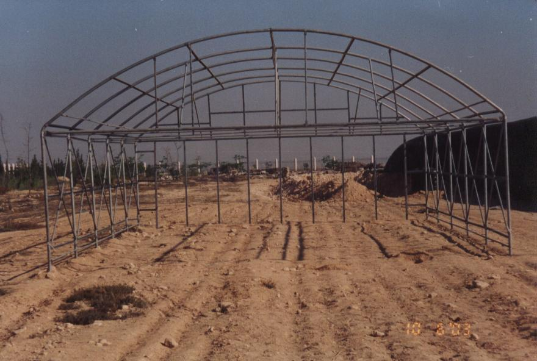
عباره عن اقواس من مواسير مجلفنه ودعامات طوليه وعرضيه تعمل
كحامل للثمار والمسافات 2.5 م و 2 م للواجهات حسب الموصفات القياسيه
المتعارف عليها لضمان سلامه الصوبه والعمل علي اتزان الصوبه من شده الرياح
ومزوده بسلك شد وعمل اوتاد بالارض وقفايز التجميع كلها مجلفنه علي الساخن
وكذلك المسامير ايضا المستخدمه مجلفنه الغطاء :اما بلاستيك معالج ضد اشعه الشمس
او شبك تظليل سيران حسب النسب المطلوبه
الاستخدامات :- انواع الخضار بانواعه فلفل – خيار - باذنجان – كوسه
صوب متعدده مالتي سبان
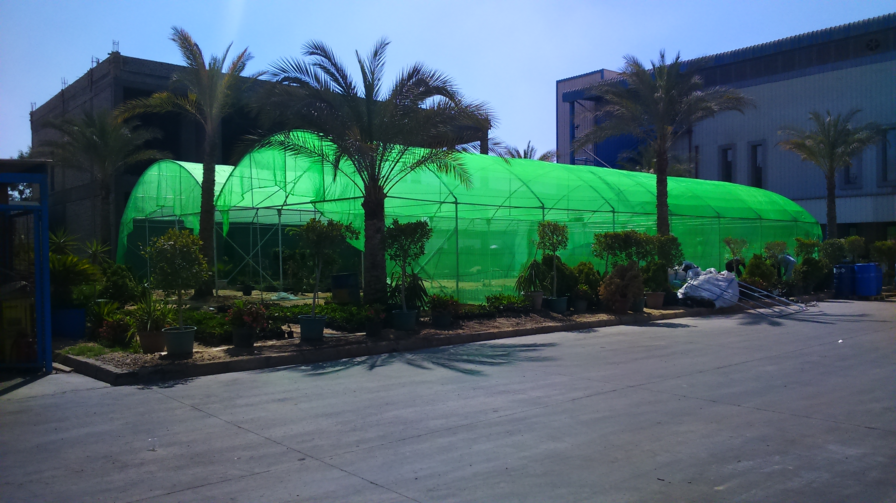
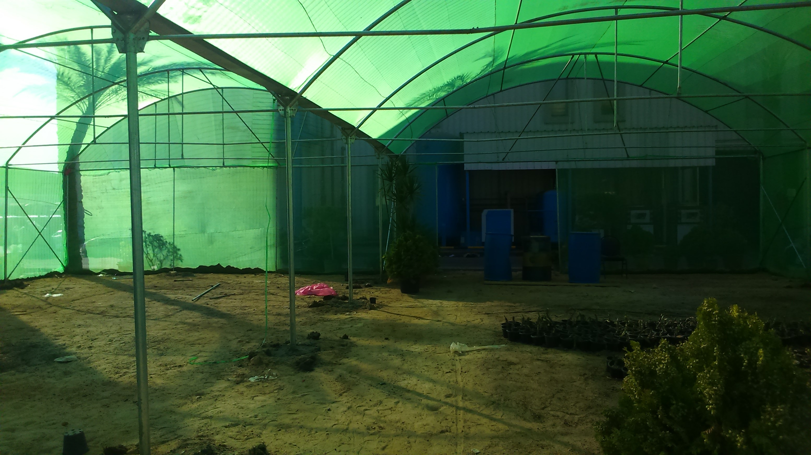

.jpeg)
اما ثنائيه او ثلاثيه او متعدده الاقبيه جميعها
الموصفات واحده من حيث وسائل التجميع عن طريق حرف y لمصنع من الصاج المجلفن لتجميع الاقواس بعضها
ببعض وقوائم المنتصف
وكذلك المدارات الطوليه والعرضيه وتقويه الواجهات
والابواب وفتحات التهويه الجانبيه الطوليه والعرضيه حسب الطلب وكذلك يتم عمل
كابينه خارجيه ذات باب جرار داخلي اما منزلق او مفصلي وكذلك خارجي مفصلي
ويتم عمل قواعد خرسانيه بالاوتاد وعمل قطاعات صاج جيتر في هذه الصوبه
لتجميع المياه والمساعده علي التصريف من اي الاتجاهات حسب ميول الصوبه
( ميزان الصوبه )
ومثبت عليه قطاع من الالومنيوم
( بروفيل) لتثبيت البلاستيك
سواء من الاجناب او في المنتصف
بواسطه سلك سوسته مكسوه بلاستيك
( زجزاج ) الغطاء حسب الطلب
من بلاستيك او شبك في حاله بلاستيك
يتم عمل فتحات تهويه مناوله يدويه تعمل
علي رفع البلاستيك لمزيد من التهويه
ومن خلفه شبك ابيض مانع للحشرات
(لمنع دخول الحشرات الذبابة البيضاء)
الاستخدامات :- نباتات زينه - خضار بانواعه
صوبه مكيفه
وهي عباره عن صوبه ذات طابع خاص ومستخدم في الابحاث والزراعات الغير تقليديه
نظرا لارتفاع اسعارها لان الهيكل المعدني تحتاج الي قطاعات من الصاج الخاص والغطاء من البولي كربونيت او الفيبر جلاس سواء من
الاجناب او السقف او الاجناب فقط والسقف بلاستيك ويتم تركيب مراوح في
احدي الواجهات والواجهه الاخري يتم تركيب كرتون تبريد (باد كولينج )
مع عمل لوحه كهربائيه للتحكم في درجه الحراره والمناوبه في التشغيل
صوبه زجاجيه
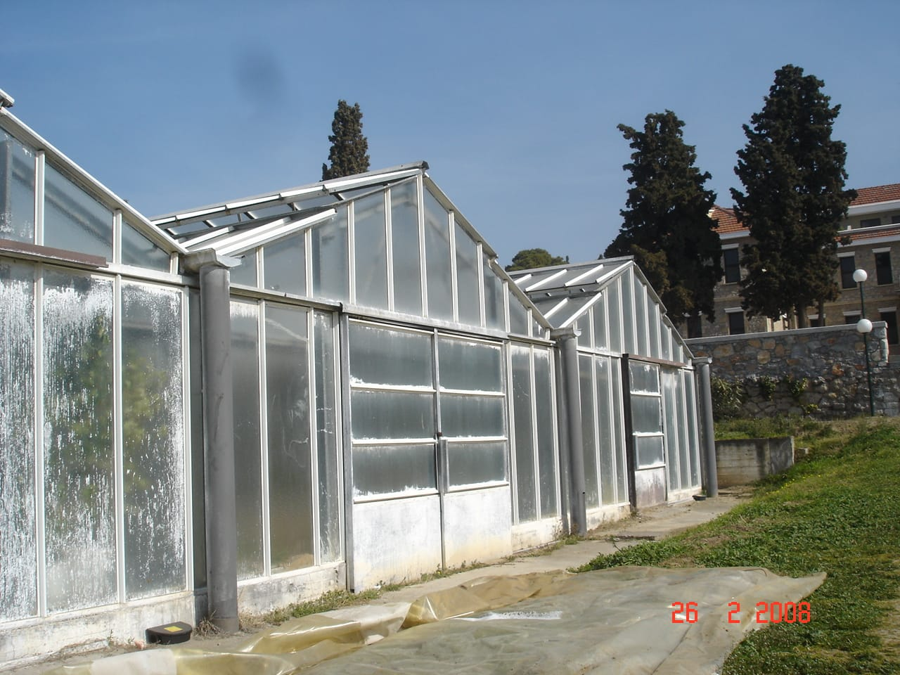
وهي عباره عن صوبه ذات طابع خاص ومستخدم في الابحاث والزراعات الغير تقليديه
نظرا لارتفاع اسعارها لان الهيكل المعدني تحتاج الي قطاعات من الصاج الخاص والغطاء من البولي كربونيت او الفيبر جلاس سواء من
الاجناب او السقف او الاجناب فقط والسقف بلاستيك ويتم تركيب مراوح في
احدي الواجهات والواجهه الاخري يتم تركيب كرتون تبريد (باد كولينج )
مع عمل لوحه كهربائيه للتحكم في درجه الحراره والمناوبه في التشغيل
صوب بولي كربونيت
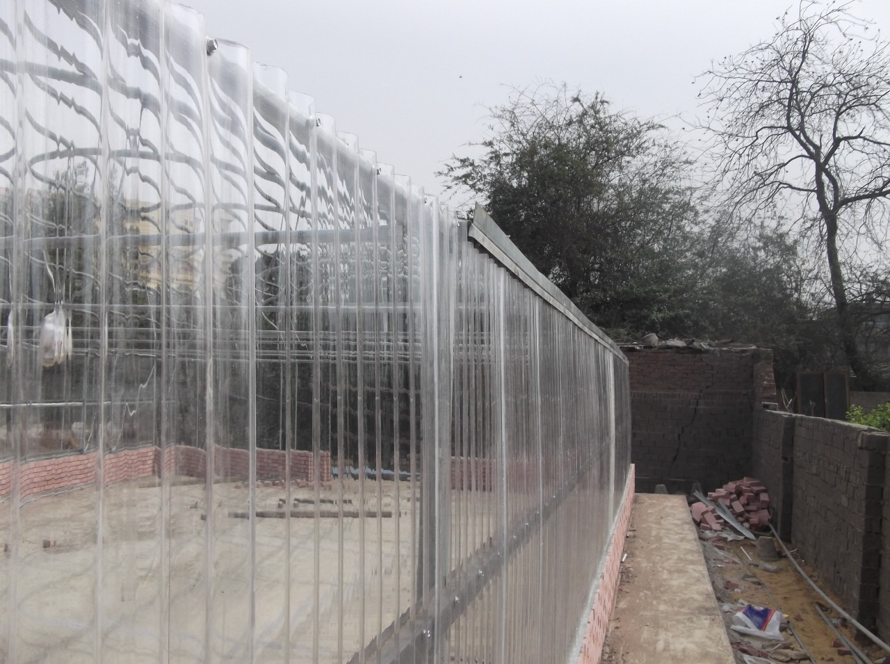
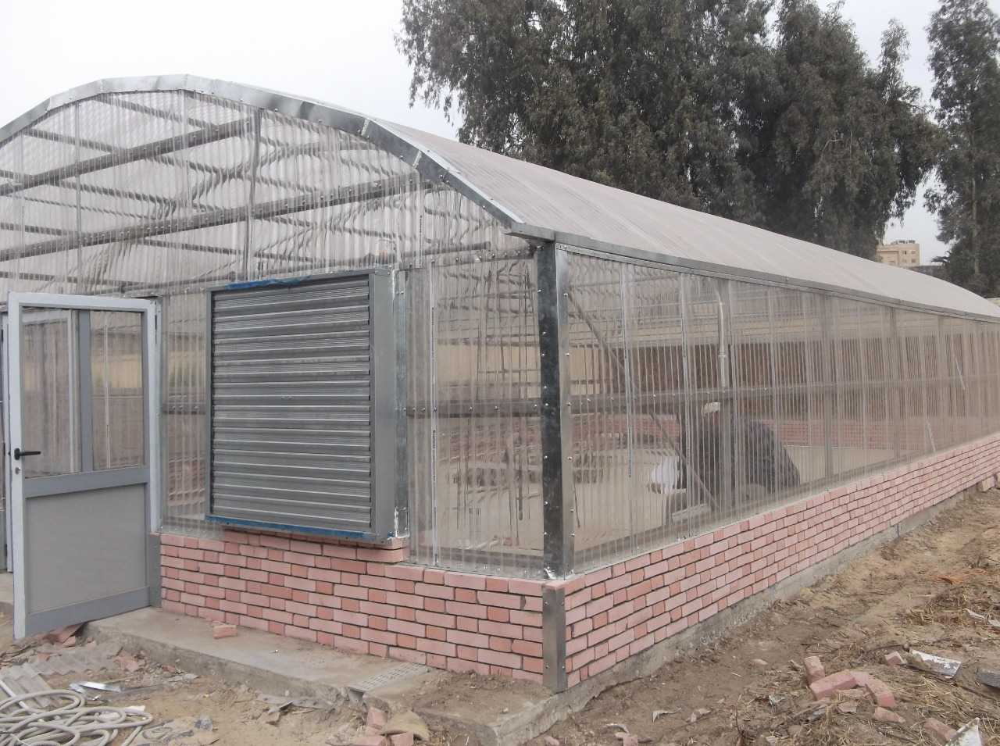
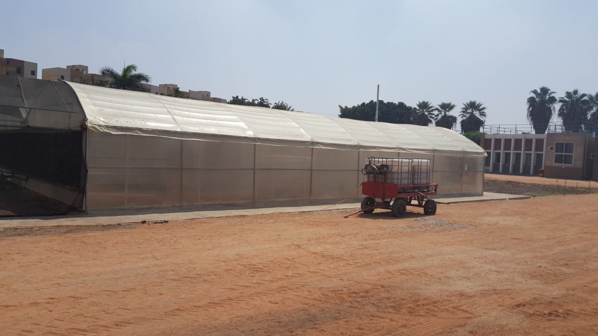
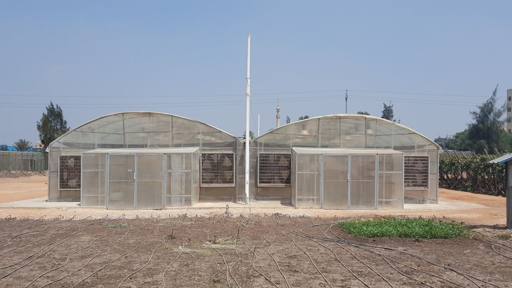
صوب احواض السمك الزراعه علي مخلفات الاسماك
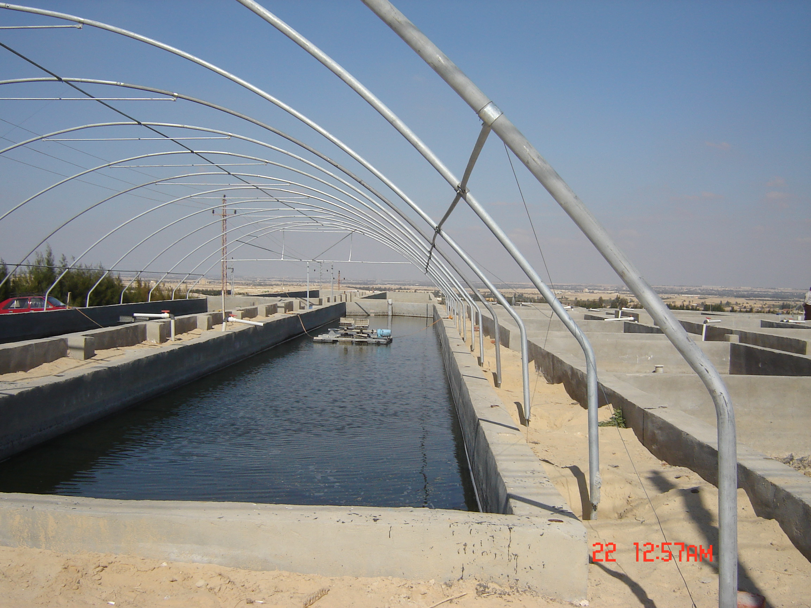
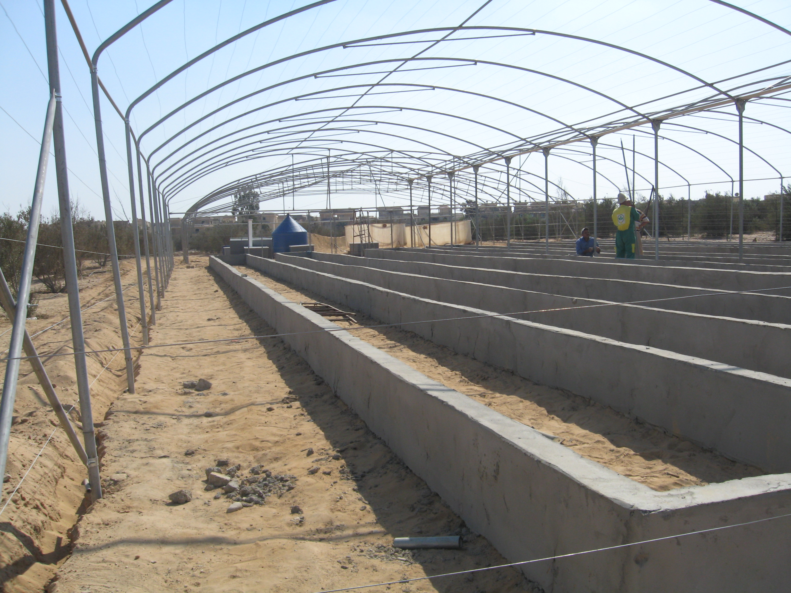
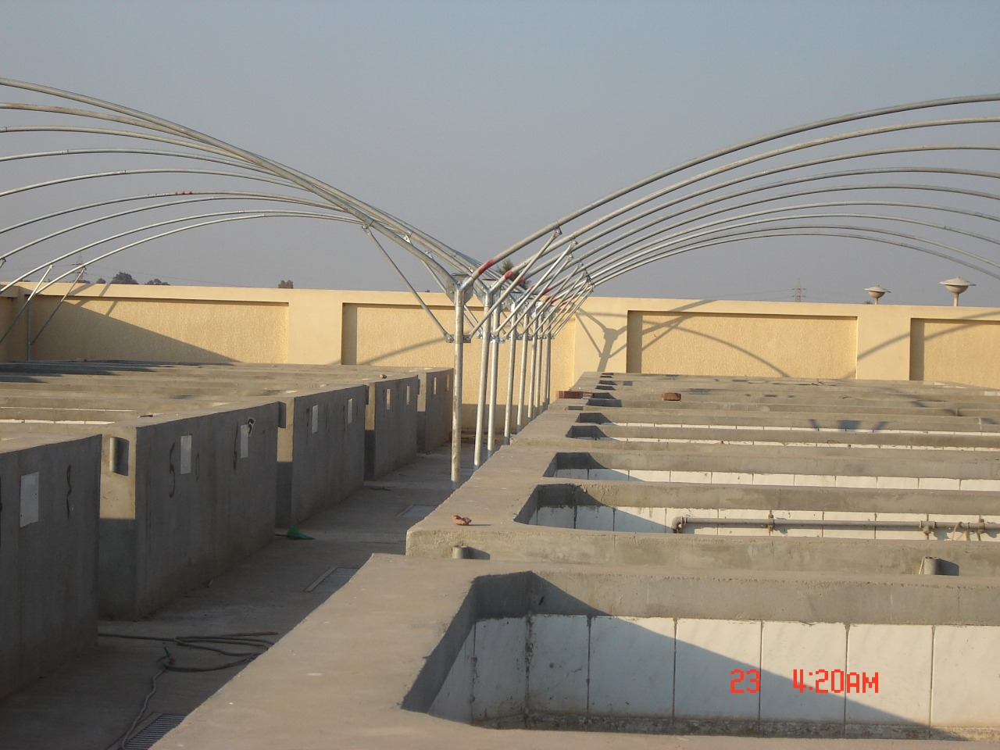
حسب الاحواض والمساحات الموجوده يتم عمل هيكل مناسب مع تقويه
التدعيم لزياده عرض الصوبه احيانا الي 12 متر دون اي قوائم وسطيه ويتم عمل بالتات حديد مناسبه لتثبيت الجوانب الحائطيه
مع توفير الفيشارات الصلب (اكمون) حتي تتحمل الضغط والاهتزاز للصوبه
من شده الرياح مع عمل وسائل التثبيت المناسبه للاحتفاظ بدرجه الحراره
الصوب الخشبيه الطريقه الاسبانيه
تعتمد علي المساحات المفتوحه وذلك نظرا لسعرها الاقتصادي المناسب من وجهه نظر العميل
وهي عباره عن دوائر من خشب الجازوارين من 13 ل 15 سم بطول 3 متر علي الاقل وكذلك الاركان من 15 ل
20 لعمل شدادات من السلك المجلفن الصلب والطري
حسب الاستخدام عمل سلك حامل ثمار 2 ملي طري عمل بردورات خرسانيه
وتغرس في الارض لمسافه 1 متر وبها حديد تسليح لا يقل عن 4 لنيه لعمل شدادات لتثبيت الصوبه والحشو الداخلي
عباره عن عروق بيضاء 10 *10 سم حسب الطلب والارتفاع حسب الطلب سواء فلات او بشكل متدرج


 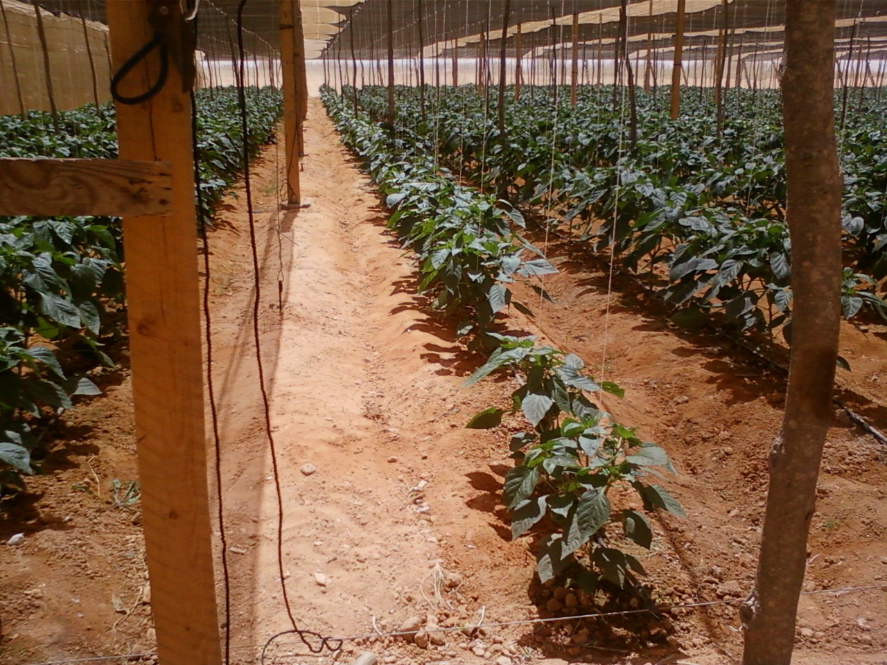
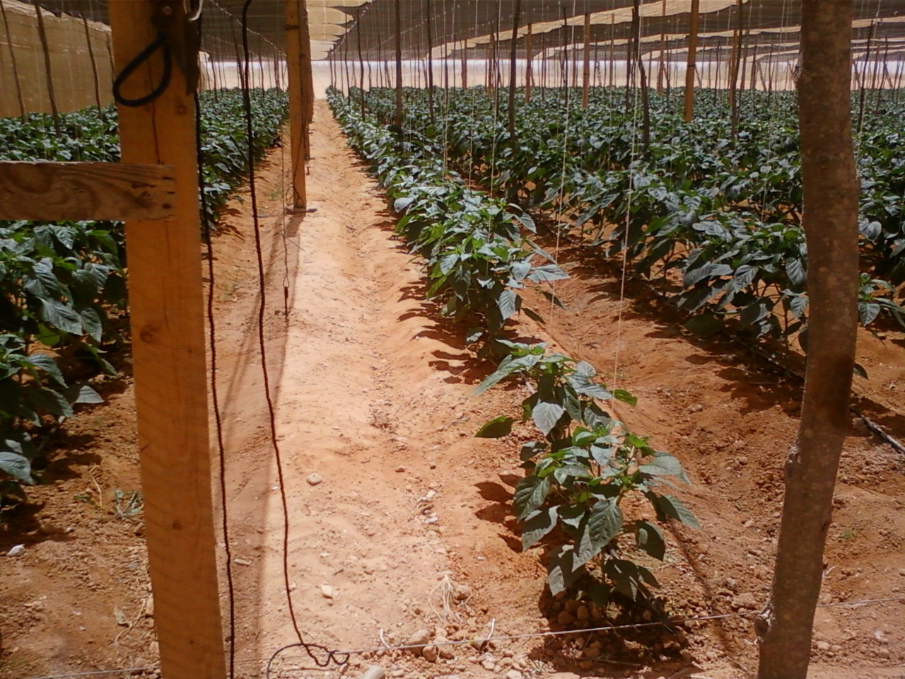


.jpeg)

.jpg)


.jpeg)
.jpeg)